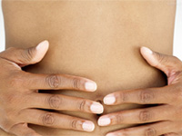
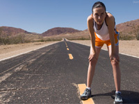
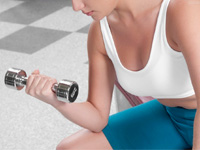

 女性月经期的注意事项和护理 不适宜吃太咸：过咸的食物，会使内的盐分和水分贮留增多，在月经来前，很容易发生头痛、情绪激动和容易生气等症状。
 经期饮食和营养调整 经期抵抗力下降，情绪易波动，恰当科学的饮食安排，能够使经期变得更加顺畅和舒适，合理的营养补充能够为经期运动带来更好的效果。
 女性月经期 莫对运动说“不” 大部份的女孩子都会在生理期前感到不适，除了心理上会有明显的焦虑不安、忧郁外，生理上也会出现体重增加、水肿、乳房肿胀、疼痛
如何利用运动减轻经期症状？ 专家一再强调：身体健康、月经正常的女性，在经期参加适量的体育运动对身体是有益的。因为体育锻炼可以改善盆腔的血液循环，改善情绪